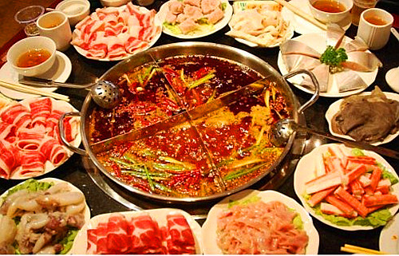
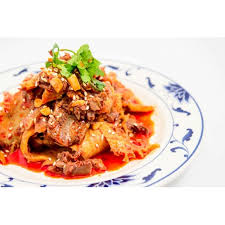

The food of flavor spicy
Spicy has the effect of promoting the secretion of digestive juices of body functions.

The first dish is:
Mapo Tofu
Mapo Tofu is one of the local traditional dish of Sichuan province in China. The main materials are tofu, beef or pork, chili and Chinese prickly ash, etc.

The second dish is:
Fuqi feipian
Fuqi feipian is a popular Sichuan dish which is made of thinly sliced beef, beef lung or stomach or tongue and a lot of spices like Chinese prickly ash.